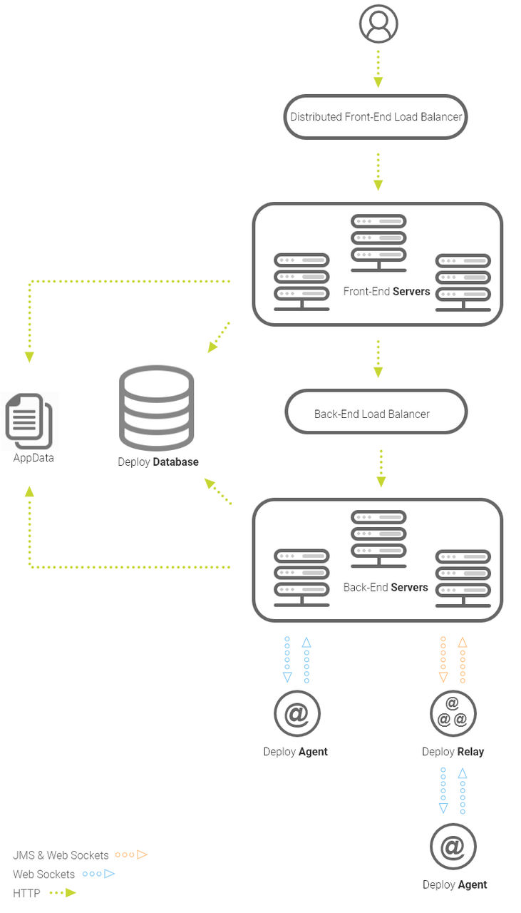

Installing the distributed front-end server
You can install a distributed front-end server. The front-end server supports high availability and fault tolerance to ensure success of your application delivery process.
Before you begin
About this task
The below image is a recommended approach for managing large volumes of traffic coming through your instances. End-user HTTP traffic can be routed through a load balancer, that can then be handed out to the Distributed Front-End Servers. If the front-end server cannot directly service the request, it makes a request to the backend load balancer to handle. The front-end server proxy URL is based on Agent External URL configured on the System Settings page.
You can configure the Deploy to allow an authorization token IP restriction when passing through the load balancer by supplying the load balancer's IP as a member of the Trusted Proxy List system settings. Make sure that the load balancer supports passing the X-Forwarded-For headers with requests.

A front-end server does not participate in agent communication, workflows, emails, notification services, or cleanup. When connected to a front-end server, you can still do everything that you would be able to do on a normal Deploy server. Requests for services that are not available on a front-end server will proxy a request to the backend.
The following property must be enabled on the backend
servers in
installed.properties.
server.userIdAuthScheme.enabled=trueAdd back end servers to Network>JMS Cluster in either one of the back end servers or in load balancer.
-frontend flag when running the
installer. Add the flag to the installation file with the command
install-server.bat -frontend on Windows or
./install-server.sh -frontend on Linux.